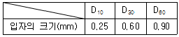
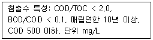
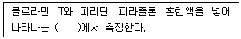
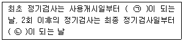
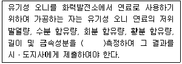

폐기물처리기사 (2021-09-12 기출문제)
1과목: 폐기물 개론
1. 폐기물 1톤을 건조시켜 함수율을 50%에서 25%로 감소시켰을 때 폐기물 중량(톤)은?
- 0.42
- 0.53
- 0.67
- 0.75
(정답률: 67%)

2. 하수처리장에서 발생되는 슬러지와 비교한 분뇨의 특성이 아닌 것은?
- 질소의 농도가 높음
- 다량의 유기물을 포함
- 염분의 농도가 높음
- 고액분리가 쉬움
(정답률: 88%)
3. 우리나라 폐기물관리법에 따른 의료폐기물 중 위해의료폐기물이 아닌 것은?
- 조직물류폐기물
- 병리계폐기물
- 격리폐기물
- 혈액오염폐기물
(정답률: 63%)
4. 쓰레기 발생량 조사 방법이라 볼 수 없는 것은?
- 적재차량 계수분석법
- 물질 수지법
- 성상 분류법
- 직접 계근법
(정답률: 80%)
5. 인구가 300000명인 도시에서 폐기물 발생량이 1.2kg/인·일 이라고 한다. 수거된 폐기물의 밀도가 0.8kg/L, 수거 차량의 적재용량이 12m3라면, 1일 2회 수거하기 위한 수거차량의 대수는? (단, 기타 조건은 고려하지 않음)
- 15대
- 17대
- 19대
- 21대
(정답률: 70%)
6. 밀도가 400kg/m3인 쓰레기 10ton을 압축시켰더니 처음 부피 보다 50%가 줄었다. 이 경우 Compaction ratio는?
- 1.5
- 2.0
- 2.5
- 3.0
(정답률: 70%)
7. 30만명 인구규모를 갖는 도시에서 발생되는 도시쓰레기량이 년간 40만톤이고, 수거 인부가 하루 500명이 동원되었을 때 MHT는? (단, 1일 작업시간 = 8시간, 연간 300일 근무)
- 3
- 4
- 6
- 7
(정답률: 68%)
8. 효과적인 수거노선 설정에 관한 설명으로 가장 거리가 먼 것은?
- 적은 양의 쓰레기가 발생하나 동일한 수거빈도를 받기를 원하는 수거지점은 가능한 한 같은 날 왕복 내에서 수거되지 않도록 한다.
- 가능한 한 지형지물 및 도로 경계와 같은 장벽을 이용하여 간선도로 부근에서 시작하고 끝나도록 배치하여야 한다.
- U자형 회전은 피하고 많은 양의 쓰레기가 발생되는 발생원은 하루 중 가장 먼저 수거하도록 한다.
- 가능한 한 시계방향으로 수거노선을 정한다.
(정답률: 70%)
9. X90=4.6cm로 도시폐기물을 파쇄하고자 할 때 Rosin-Rammler 모델에 의한 특성입자크기(Xo, cm)는? (단, n=1로 가정)
- 1.2
- 1.6
- 2.0
- 2.3
(정답률: 64%)
10. 강열감량에 대한 설명으로 가장 거리가 먼 것은?
- 강열감량이 높을수록 연소효율이 좋다.
- 소각잔사의 매립처분에 있어서 중요한 의미가 있다.
- 3성분 중에서 가연분이 타지 않고 남는 양으로 표현된다.
- 소각로의 연소효율을 판정하는 지표 및 설계인자로 사용된다.
(정답률: 68%)
11. 폐기물의 성분을 조사한 결과 플라스틱의 함량이 10%(중량비)로 나타나다. 폐기물의 밀도가 300kg/m3이라면 폐기물 10m3중에 함유된 플라스탁의 양(kg)은?
- 300
- 400
- 500
- 600
(정답률: 71%)
12. 적환장을 설치하는 일반적인 경우와 가장 거리가 먼 것은?
- 불법 투기 쓰레기들이 다량 발생할 때
- 고밀도 거주지역이 존재할 때
- 상업지역에서 폐기물수집에 소형용기를 많이 사용할 때
- 슬러지수송이나 공기수송 방식을 사용할 때
(정답률: 72%)
13. 폐기물을 파쇄하여 입도를 분석하였더니 폐기물 입도 분포 곡선상 통과백분율이 10%, 30%, 60%, 90%에 해당되는 입경이 각각 2mm, 4mm, 6mm, 8mm이었다. 곡률계수는?
- 0.93
- 1.13
- 1.33
- 1.53
(정답률: 73%)
14. 고위발열량이 8000kcal/kg인 폐기물 10톤과 6000kcal/kg인 폐기물 2톤을 혼합하여 SRF를 만들었다면 SRF의 고위발열량(kcal/kg)은?
- 약 7567
- 약 7667
- 약 7767
- 약 7867
(정답률: 68%)
15. 도시 쓰레기 수거노선을 설정할 때 유의해야 할 사항으로 틀린 것은?
- 수거지점과 수거빈도를 정하는데 있어서 기존 정책을 참고한다.
- 수거인원 및 차량 형식이 같은 기존 시스템의 조건들을 서로 관련시킨다.
- 교통이 혼잡한 지역에서 발생되는 쓰레기는 새벽에 수거한다.
- 쓰레기 발생량이 많은 지역은 연료 절감을 위해 하루 중 가장 늦게 수거한다.
(정답률: 75%)
16. 전과정평가(LCA)는 4부분으로 구성된다. 그 중 상품, 포장, 공정, 물질, 원료 및 활동에 의해 발생하는 에너지 및 천연원료 요구량, 대기, 수질 오염물질 배출, 고형폐기물과 기타 기술적 자료구축 과정에 속하는 것은?
- scoping analysis
- inventory analysis
- impact analysis
- improvement analysis
(정답률: 64%)
17. MBT에 관한 설명으로 맞는 것은?
- 생물학적 처리가 가능한 유기성폐기물이 적은 우리나라는 MBT 설치 및 운영이 적합하지 않다.
- MBT는 지정폐기물의 전처리 시스템으로서 폐기물 무해화에 효과적이다.
- MBT는 주로 기계적 선별, 생물학적 처리 등을 통해 재활용 물질을 회수하는 시설이다.
- MBT는 생활폐기물 소각 후 잔재물을 대상으로 재활용 물질을 회수하는 시설이다.
(정답률: 48%)
18. 쓰레기 선별에 사용되는 직경이 5.0m인 트롬멜 스크린의 최적속도(rpm)는?
- 약 9
- 약 11
- 약 14
- 약 16
(정답률: 52%)
19. 분뇨처리를 위한 혐기성 소화조의 운영과 통제를 위하여 사용하는 분석항목으로 가장 거리가 먼 것은?
- 휘발성 산의 농도
- 소화가스 발생량
- 세균수
- 소화조 온도
(정답률: 62%)
20. 쓰레기 발생량 예측방법으로 적절하지 않은 것은?
- 경향법
- 물질수지법
- 다중회귀모델
- 동적모사모델
(정답률: 71%)
2과목: 폐기물 처리 기술
21. 매립지의 연직 차수막에 관한 설명으로 옳은 것은?
- 지중에 암반이나 점성토의 불투수층이 수직으로 깊이 분포하는 경우에 설치한다.
- 지하수 집배수시설이 불필요하다.
- 지하에 매설되므로 차수막 보강시공이 불가능하다.
- 차수막의 단위면적당 공사비는 적게 소요되나 총공사비는 비싸다.
(정답률: 43%)
22. 토양증기추출공정에서 발생되는 2차 오염 배가스 처리를 위한 흡착방법에 대한 설명으로 옳지 않은 것은?
- 배가스의 온도가 높을수록 처리성능은 향상된다.
- 배가스 중의 수분을 전단계에서 최대한 제거해 주어야 한다.
- 흡착제의 교체주기는 파과지점을 설계하여 정한다.
- 흡착반응기 내 채널링 현상을 최소화하기 위하여 배가스의 선속도를 적정하게 조절한다.
(정답률: 69%)
23. 매립지 중간복토에 관한 설명으로 틀린 것은?
- 복토는 메탄가스가 외부로 나가는 것을 방지한다.
- 폐기물이 바람에 날리는 것을 방지한다.
- 복토재로는 모래나 점토질을 사용하는 것이 좋다.
- 지반의 안정과 강도를 증가시킨다.
(정답률: 63%)
24. 휘발성 유기화합물질(VOCs)이 아닌 것은?
- 벤젠
- 디클로로에탄
- 아세톤
- 디디티
(정답률: 51%)
25. 폐기물의 고화처리방법 중 피막형성법의 장점으로 옳은 것은?
- 화재 위험성이 없다.
- 혼합율이 높다.
- 에너지 소비가 적다.
- 침출성이 낮다.
(정답률: 58%)
26. 고형물농도가 80000ppm인 농축슬러지량 20m3/hr를 탈수하기 위해 개량제(Ca(OH)2)를 고형물당 10wt% 주입하여 함수율 85wt%인 슬러지 cake을 얻었다면 예상 슬러지 cake의 양(m3/hr)은? (단, 비중 = 1.0 기준)
- 약 7.3
- 약 9.6
- 약 11.7
- 약 13.2
(정답률: 48%)
27. 친산소성 퇴비화 공정의 설계 운영고려 인자에 관한 내용으로 틀린 것은?
- 수분함량: 퇴비화기간 동안 수분함량은 50~60% 범위에서 유지된다.
- C/N비: 초기 C/N비는 25~50이 적당하며 C/N비가 높은 경우는 암모니아 가스가 발생한다.
- pH조절: 적당한 분해작용을 위해서는 pH7~7.5 범위를 유지하여야 한다.
- 공기공급: 이론적인 산소요구량은 식을 이용하여 추정이 가능하다.
(정답률: 60%)
28. 분뇨 슬러지를 퇴비화 할 경우, 영향을 주는 요소로 가장 거리가 먼 것은?
- 수분함량
- 온도
- pH
- SS농도
(정답률: 58%)
29. 유기물(C6H12O6) 0.1 ton을 혐기성 소화할 때 생성될 수 있는 최대 메탄의 양(kg)은?
- 12.5
- 26.7
- 37.3
- 42.9
(정답률: 64%)
30. 매립지에서 침출된 침출수 농도가 반으로 감소하는 데 약 3년이 걸린다면 이 침출수 농도가 90% 분해되는 데 걸리는 시간(년)은? (단, 일차반응 기준)
- 6
- 8
- 10
- 12
(정답률: 65%)
31. 소각장에서 발생하는 비산재를 매립하기 위해 소각재 매립지를 설계하고자 한다. 내부 마찰각(Φ) 30°, 부착도(c) 1kPa, 소각재의 유해성과 특성변화 때문에 안정에 필요한 안전인자(FS)는 2.0일 때, 소각재 매립지의 최대 경사각 β(°)은?
- 14.7
- 16.1
- 17.5
- 18.5
(정답률: 52%)
32. 슬러지 수분 결합상태 중 탈수하기 가장 어려운 형태는?
- 모관결합수
- 간극모관결합수
- 표면부착수
- 내부수
(정답률: 70%)
33. 쓰레기의 밀도가 750kg/m3이며 매립된 쓰레기의 총량은 30000ton이다. 여기에서 유출되는 연간 침출수량(m3)은? (단, 침출수발생량은 강우량의 60%, 쓰레기의 매립 높이 = 6m, 연간 강우량 = 1300mm, 기타 조건은 고려하지 않음)
- 2600
- 3200
- 4300
- 5200
(정답률: 52%)
34. 총질소 2%인 고형 폐기물 1 ton을 퇴비화 했더니 총질소는 2.5%가 되고 고형 폐기물의 무게는 0.75ton이 되었다. 결과적으로 퇴비화 과정에서 소비된 질소의 양(kg)은? (단, 기타 조건은 고려하지 않음)
- 1.25
- 3.25
- 5.25
- 7.25
(정답률: 52%)
35. 쓰레기 발생량은 1000ton/day, 밀도는 0.5ton/m3이며, trench법으로 매립할 계획이다. 압축에 따른 부피감소율 40%, trench 깊이 4.0m, 매립에 사용되는 도랑면적 점유율이 전체부지의 60%라면 연간 필요한 전체부지 면적(m2)은?
- 182500
- 243500
- 292500
- 325500
(정답률: 47%)
36. Soil washing기법을 적용하기 위하여 토양의 입도분포를 조사한 결과가 다음과 같을 경우, 유효입경(mm)과 곡률 계수는? (단, D10, D30, D60는 각각 통과백분율 10%, 30%, 60%에 해당하는 입자 직경이다.)

- 유효입경=0.25, 곡률계수=1.6
- 유효입경=3.60, 곡률계수=1.6
- 유효입경=0.25, 곡률계수=2.6
- 유효입경=3.60, 곡률계수=2.6
(정답률: 54%)
37. 함수율 60%인 쓰레기를 건조시켜 함수율 20%로 만들려면 건조시켜야 할 수분양(kg/톤)은?
- 150
- 300
- 500
- 700
(정답률: 66%)
38. 열분해와 운전인자에 대한 설명으로 틀린 것은?
- 열분해는 무산소상태에서 일어나는 반응이며 필요한 에너지를 외부에서 공급해 주어야 한다.
- 열분해가스 중 CO, H2, CH4 등의 생성율은 열공급속도가 커짐에 따라 증가한다.
- 열분해 반응에서는 열공급속도가 켜짐에 따라 유기성 액체와 수분, 그리고 Char의 생성량은 감소한다.
- 산소가 일부 존재하는 조건에서 열분해가 진행되면 CO2의 생성량이 최대가 된다.
(정답률: 47%)
39. 다음과 같은 특성을 가진 침출수의 처리에 가장 효율적인 공정은?

- 이온교환수지
- 활성탄
- 화학적 침전(석회투여)
- 화학적 산화
(정답률: 54%)
40. 설계확률 강우강도를 계산할 때 적용되지 않는 공식은?
- Talbot형
- Sherman형
- Japanese형
- Manning형
(정답률: 59%)
3과목: 폐기물 소각 및 열회수
41. 고형폐기물의 중량조성이 C:72%, H:6%, O:8%, S:2%, 수분:12%일 때 저위발열량(kcal/kg)은? (단, 단위 질량당 열량 C:8100kcal/kg, H:34250kcal/kg, S:2250kcal/kg)
- 7016
- 7194
- 7590
- 7914
(정답률: 57%)
42. 유동충 소각로방식에 대한 설명으로 틀린 것은?
- 반응시간이 빨라 소각시간이 짧다. (로부하율이 높다.)
- 기계적 구동부분이 많아 고장율이 높다.
- 폐기물의 투입이나 유동화를 위해 파쇄가 필요하다.
- 가스온도가 낮고 과잉공기량이 적어 NOx도 적게 배출된다.
(정답률: 63%)
43. 플라스틱 폐기물의 소각 및 열분해에 대한 설명으로 옳지 않은 것은?
- 감압증류법은 황의 함량이 낮은 저유황유를 회수할 수 있다.
- 멜라민 수지를 불완전 연소하면 HCN과 NH3가 생성된다.
- 열분해에 의해 생성된 모노머는 발화성이 크고, 생성가스의 연소성도 크다.
- 고온열분해법에서는 타르, Char 및 액체상태의 연료가 많이 생성된다.
(정답률: 52%)
44. 일반적으로 연소과정에서 매연(검댕)의 발생이 최대로 되는 온도는?
- 300~450℃
- 400~550℃
- 500~650℃
- 600~750℃
(정답률: 38%)
45. 탄화도가 클수록 석탄이 가지게 되는 성질에 관한 내용으로 틀린 것은?
- 고정탄소의 양이 증가한다.
- 휘발분이 감소한다.
- 연소 속도가 커진다.
- 착화온도가 높아진다.
(정답률: 36%)
46. 분자식이 CmHn인 탄화수소가스 1Sm3의 완전연소에 필요한 이론 공기량(Sm3/Sm3)은?
- 3.76m+1.19n
- 4.76m+1.19n
- 3.76m+1.83n
- 4.76m+1.83n
(정답률: 58%)
47. 화씨온도 100°F는 몇 ℃인가?
- 35.2
- 37.8
- 39.7
- 41.3
(정답률: 67%)
48. 다음 연소장치 중 가장 적은 공기비의 값을 요구하는 것은?
- 가스 버너
- 유류 버너
- 미분탄 버너
- 수동수평화격자
(정답률: 61%)
49. 저위발열량이 8000kcal/Sm3인 가스연료의 이론연소온도(℃)는? (단, 이론연소가스량은 10Sm3/Sm3, 연료연소가스의 평균정압비열은 0.35kcal/Sm3℃, 기준온도는 실온(15℃), 지금 공기는 예열되지 않으며, 연소가스는 해리되지 않는 것으로 한다.)
- 약 2100
- 약 2200
- 약 2300
- 약 2400
(정답률: 59%)
50. 열분해 공정에 대한 설명으로 옳지 않은 것은?
- 배기가스량이 적다.
- 환원성 분위기를 유지할 수 있어 3가크롬이 6가크롬으로 변화하지 않는다.
- 황분, 중금속분이 회분 속에 고정되는 비률이 적다.
- 질소산화물의 발생량이 적다.
(정답률: 52%)
51. 열교환기 중 절탄기에 관한 설명으로 틀린 것은?
- 급수 예열에 의해 보일러수와의 온도차가 감소함에 따라 보일러 드럼에 열응력이 증가한다.
- 급수온도가 낮을 경우, 굴뚝가스 온도가 저하하면 절탄기 저온부에 접하는 가스온도가 노점에 달하여 절탄기를 부식시킨다.
- 굴뚝이 가스온도 저하로 인한 굴뚝 통풍력의 감소에 주의 하여야 한다.
- 보일러 전열면을 통하여 연소가스의 여열로 보일러 급수를 예열하여 보일러의 효율을 높이는 장치이다.
(정답률: 44%)
52. 액체 주입형 소각로의 단점이 아닌 것은?
- 대기오염 방지시설 이외의 소각재 처리설비가 필요하다.
- 완전히 연소시켜 주어야 하며 내화물의 파손을 막아주어야 한다.
- 고농도 고형분으로 인하여 버너가 막히기 쉽다.
- 대량 처리가 어렵다.
(정답률: 59%)
53. 수분함량이 20%인 폐기물의 발열량을 단열열량계로 분석한 결과가 1500kcal/kg이라면 저위발열량(kcal/kg)은?
- 1320
- 1380
- 1410
- 1500
(정답률: 52%)
54. 폐기물의 저위발열량을 폐기물 3성분 조성비를 바탕으로 추정할 때 3가지 성분에 포함되지 않는 것은?
- 수분
- 회분
- 가연분
- 휘발분
(정답률: 63%)
55. 도시폐기물 소각로 설계 시 열수지(heat blalnce)수립에 필요한 물, 수증기 그리고 건조공기의 열용량(specific heat capacity)은? (단, 단위는 Btu/lb°F이다.)
- 1, 0.5, 0.26
- 1, 0.5, 0.5
- 0.5, 0.5, 0.26
- 0.5, 0.26, 0.26
(정답률: 41%)
56. 표준상태에서 배기가스 내에 존재하는 CO2, 농도가 0.01%일 때 이것은 몇 mg/m3인가?
- 146
- 196
- 266
- 296
(정답률: 58%)
57. 옥탄(C8H18)이 완전 연소할 때 AFR은? (단, kg molair/kg molfuel)
- 15.1
- 29.1
- 32.5
- 59.5
(정답률: 30%)
58. 유황 함량이 2%인 벙커C유 1.0ton을 연소시킬 경우 발생되는 SO2의 양(kg)은? (단, 황성분 전량이 SO2로 전환됨)
- 30
- 40
- 50
- 60
(정답률: 51%)
59. 유동상 소각로의 특징으로 옳지 않은 것은?
- 과잉공기율이 작아도 된다.
- 층내 압력손실이 작다.
- 층내 온도의 제어가 용이하다.
- 노부하율이 높다.
(정답률: 33%)
60. 할로겐족 함유 폐기물의 소각처리가 적합하지 않은 이유에 관한 설명으로 틀린 것은?
- 소각 시 HCI 등이 발생한다.
- 대기오염방지시설의 부식문제를 야기한다.
- 발열량이 다른 성분에 비해 상대적으로 낮다.
- 연소 시 수증기의 생산량이 많다.
(정답률: 55%)
4과목: 폐기물 공정시험기준(방법)
61. 자외선/가시선 분광법으로 크롬을 정량할 때 KMnO4를 사용하는 목적은?
- 시료 중의 총 크롬을 6가크롬으로 하기 위해서다.
- 시료 중의 총 크롬을 3가크롬으로 하기 위해서다.
- 시료 중의 총 크롬을 이온화하기 위해서다.
- 다이페닐카바자이드와 반응을 최적화하기 위해서다.
(정답률: 63%)
62. 용액의 농도를 %로만 표현하였을 경우를 옳게 나타낸 것은? (단, W:무게, V:부피)
- V/V%
- W/W%
- V/W%
- W/V%
(정답률: 67%)
63. 시료의 전처리 방법으로 많은 시료를 동시에 처리하기 위하여 회화에 의한 유기물 분해 방법을 이용하고자 하며, 시료 중에는 염화칼슘이 다량 함유되어 있는 것으로 조사되었다. 아래 보기 중 회화에 의한 유기물분해 방법이 적용 가능한 중금속은?
- 납(Pb)
- 철(Fe)
- 안티몬(Sb)
- 크롬(Cr)
(정답률: 51%)
64. 원자흡수분광광도법에 의하여 비소를 측정하는 방법에 대한 설명으로 거리가 먼 것은?
- 정량한계는 0.0⑤mg/L이다.
- 운반 가스로 아르곤 가스(순도 99.99%이상)를 사용한다.
- 아르곤-수소불꽃에서 원자화시켜 253.7nm에서 흡광도를 측정한다.
- 전처리한 시료 용액 중에 아연 또는 나트륨붕소수화물을 넣어 생성된 수소화비소를 원자화시킨다.
(정답률: 48%)
65. 감염성 미생물의 분석방법으로 가장 거리가 먼 것은?
- 아포균 검사법
- 열멸균 검사법
- 세균배양 검사법
- 멸균테이프 검사법
(정답률: 62%)
66. 기체크로마토그래피에 관한 일반적인 사항으로 옳지 않은 것은?
- 충전물로서 적당한 담체에 고정상 액체를 함침시킨 것을 사용할 경우 기체-액체 크로마토그래피법이라 한다.
- 무기화합물에 대한 정성 및 정량분석에 이용된다.
- 운반기체는 시료도입부로부터 분리관내를 흘러서 검출기를 통하여 외부로 방출된다.
- 시료도입부, 분리관 검출기 등은 필요한 온도를 유지해 주어야 한다.
(정답률: 51%)
67. 중량법에 의한 기름성분 분석방법에 관한 설명으로 옳지 않은 것은?
- 시료를 직접 사용하거나, 시료에 적당한 응집제 또는 흡착제 등을 넣어 노말헥산 추출물질을 포집한 다음 노말헥산으로 추출한다.
- 시험기준의 정량한계는 0.1%이하로 한다.
- 폐기물 중의 휘발성이 높은 탄화수소, 탄화수소유도체, 그리스유상물질 중 노말헥산에 용해되는 성분에 적용한다.
- 눈에 보이는 이물질이 들어 있을 때에는 제거해야 한다.
(정답률: 46%)
68. 석면의 종류 중 백석면의 형태와 색상에 관한 내용으로 가장 거리가 먼 것은?
- 곧은 물결 모양의 섬유
- 다발의 끝은 분산
- 다색성
- 가열되면 무색 ~ 밝은 갈색
(정답률: 58%)
69. 기체크로마토그래피에 의한 휘발성 저급염소화 탄화수소류 분석방법에 관한 설명과 가장 거리가 먼 것은?
- 끓는점이 낮거나 비극성 유기화합물들이 함께 추출되어 간섭현상이 일어난다.
- 시료 중에 트리클로로에틸렌(C2HCI3)의 정량한계는 0.008mg/L, 테트라클로로에틸렌(C2CI4)의 정량한계는 0.002mg/L이다.
- 디클로로메탄과 같은 휘발성 유기물은 보관이나 운반 중에 격막(septum)을 통해 시료 안으로 확산되어 시료를 오염시킬 수 있으므로 현장 바탕시료로서 이를 점검하여야 한다.
- 디클로로메탄과 같이 머무름 시간이 짧은 화합물은 용매의 피크와 겹쳐 분석을 방해할 수 있다.
(정답률: 31%)
70. 시안의 자외선/가시선 분광법에 관한 내용으로 ( )에 옳은 내용은?

- 적색을 460nm
- 황갈색을 560nm
- 적자색을 520nm
- 청색을 620nm
(정답률: 49%)
71. 원자흡수분광도법에서 일어나는 분광학적 간섭에 해당하는 것은?
- 불꽃 중에서 원자가 이온화하는 경우
- 시료용액의 점성이나 표면장력 등에 의하여 일어나는 경우
- 분석에 사용하는 스펙트럼선이 다른 인접선과 완전히 분리되지 않는 경우
- 공존물질과 작용하여 해리하기 어려운 화합물이 생성되어 흡광에 관계하는 기저상태의 원자수가 감소하는 경우
(정답률: 61%)
72. 폐기물 시료의 용출 시험 방법에 대한 설명으로 틀린 것은?
- 지정폐기물의 판정이나 매립방법을 결정하기 위한 시험에 적용한다.
- 시료 100g이상을 정확히 달아 정제수에 염산을 넣어 pH를 4.5~5.3으로 맞춘 용매와 1:5의 비율로 혼합한다.
- 진탕여과한 액을 검액으로 사용하나 여과가 어려운 경우 원심분리기를 이용한다.
- 용출시험 결과는 수분함량 보정을 위해 함수율 85% 이상인 시료에 한하여 [15/(100-시료의 함수율(%))]을 곱하여 계산된 값으로 한다.
(정답률: 70%)
73. 수소이온농도(pH) 시험방법에 관한 설명으로 틀린 것은? (단, 유리전극법 기준)
- pH를 0.1까지 측정한다.
- 기준전극은 은-염화은의 칼로멜 전극등으로 구성된 전극으로 pH측정기에서 측정 전위값의 기준이 된다.
- 유리전극은 일반적으로 용액의 색도, 탁도, 콜로이드성 물질들, 산화 및 환원성 물질들 그리고 염도에 의해 간섭을 받지 않는다.
- pH는 온도변화에 영향을 받는다.
(정답률: 42%)
74. 대상 폐기물의 양이 1100톤인 경우 현장 시료의 최소 수(개)는?
- 40
- 50
- 60
- 80
(정답률: 64%)
75. 폐기물 소각시설의 소각재 시료채취에 관한 내용 중 회분식 연소 방식의 소각재 반출 설비에서의 시료채취 내용으로 옳은 것은?
- 하루 동안의 운행시간에 따라 매 시간마다 2회 이상 채취하는 것을 원칙으로 한다.
- 하루 동아의 운행시간에 따라 매 시간마다 3회 이상 채취하는 것을 원칙으로 한다.
- 하루 동안의 운전횟수에 따라 매 운전시마다 2회 이상 채취하는 것을 원칙으로 한다.
- 하루 동안의 운전횟수에 따라 매 운전시마다 3회 이상 채취하는 것을 원칙으로 한다.
(정답률: 63%)
76. 시안(CN)을 분석하기 위한 자외선/가시선 분광법에 대한 설명으로 옳지 않은 것은?
- 시안화합물을 측정할 때 방해물질들은 증류하면 대부분 제거된다.
- 정량한계는 0.01mg/L이다.
- pH2 이하 산성에서 피리딘ㆍ피라졸론을 넣고 가열 증류한다.
- 유출되는 시안화수소를 수산화나트륨용액으로 포집한 다음 중화한다.
(정답률: 43%)
77. 총칙에서 규정하고 있는 내용으로 틀린 것은?
- “항량으로 될 때까지 건조한다”함은 같은 조건에서 10시간 더 건조할 때 전후 무게의 차가 g당 0.1mg이하일 때를 말한다.
- “방울수”라 함은 20℃에서 정제수 20방울을 적하할 때, 그 부피가 약 1mL 되는 것을 뜻한다.
- “감압 또는 진공”이라 함은 따로 규정이 없는 한 15mmHg 이하를 뜻한다.
- 무게를 “정확히 단다”라 함은 규정된 수치의 무게를 0.1mg까지 다는 것을 말한다.
(정답률: 71%)
78. 시료의 조제방법에 관한 설명으로 틀린 것은?
- 시료의 축소방법에는 구획법, 교호삽법, 원추 4분법이 있다.
- 소각잔재, 슬러지 또는 입자상 물질 중 입경이 5mm 이상인 것은 분쇄하여 체로 걸러서 입경이 0.5~5mm로 한다.
- 시료의 축소방법 중 구획법은 대시료를 네모꼴로 엷게 균일한 두께로 편 후, 가로 4등분, 세로 5등분하여 20개의 덩어리로 나누어 20개의 각 부분에서 균등량씩을 취해 혼합하여 하나의 시료로 한다.
- 축소라 함은 폐기물에서 시료를 채취할 경우 혹은 조제된 시료의 양이 많은 경우에 모은 시료의 평균적 성질을 유지하면서 양을 감소시켜 측정용 시료를 만드는 것을 말한다.
(정답률: 53%)
79. 폐기물 시료 20g에 고형물 함량이 1.2g이었다면 다음 중 어떤 폐기물에 속하는가? (단, 폐기물의 비중=1.0)
- 액상폐기물
- 반액상폐기물
- 반고상폐기물
- 고상폐기물
(정답률: 66%)
80. PCB측정 시 시료의 전처리 조작으로 유분의 제거를 위하여 알칼리 분해를 실시하는 과정에서 알칼리제로 사용하는 것은?
- 산화칼슘
- 수산화칼륨
- 수산화나트륨
- 수산화칼슘
(정답률: 45%)
5과목: 폐기물 관계 법규
81. 폐기물처리시설을 설치ㆍ운영하는 자는 환경부령이 정하는 기간마다 정기검사를 받아야 한다. 음식물류 폐기물 처리시설인 경우의 검사기간 기준으로 ( )에 옳은 것은?

- ㉠ 3년, ㉡ 3년
- ㉠ 1년, ㉡ 3년
- ㉠ 3개월, ㉡ 3개월
- ㉠ 1년, ㉡ 1년
(정답률: 38%)
82. 에너지 회수기준으로 알맞지 않은 것은?
- 다른 물질과 혼합하지 아니하고 해당 폐기물의 저위발열량이 킬로그램당 3천 킬로칼로리 이상일 것
- 환경부장관이 정하여 고시하는 경우에는 폐기물의 30퍼센트 이상을 원료나 재료로 재활용하고 그 나머지 중에서 에너지의 회수에 이용할 것
- 회수열을 50퍼센트 이상 열원으로 스스로 이용하거나 다른 사람에게 공급할 것
- 에너지의 회수효율(회수에너지 총량을 투입에너지 총량으로 나눈 비율을 말한다.)이 75퍼센트 이상일 것
(정답률: 58%)
83. 음식물류 폐기물을 대상으로 하는 폐기물 처분시설의 기술관리인의 자격으로 틀린 것은?
- 일반기계산업기사
- 전기기사
- 토목산업기사
- 대기환경산업기사
(정답률: 37%)
84. 폐기물처리시설을 설치 운영하는 자가 폐기물처리시설의 유지ㆍ관리에 관한 기술관리 대행을 체결할 경우 대행하게 할 수 있는 자로서 옳지 않은 것은?
- 한국환경공단
- 엔지니어링산업 진흥법에 따라 신고한 엔지니어링사업자
- 기술사법에 따른 기술사사무소
- 국립환경과학원
(정답률: 46%)
85. 기술관리인을 두어야 할 폐기물처리시설은? (단, 폐기물처리업자가 운영하는 폐기물처리 시설 제외)
- 사료화ㆍ퇴비화 시설로서 1일 처리능력이 1톤인 시설
- 최종처분시설 중 차단형 매립시설에 있어서는 면적이 200제곱미터인 매립시설
- 지정폐기물 외의 폐기물을 매립하는 시설로서 매립용적이 2만세제곱미터인 시설
- 연료화시설로서 1일 재활용능력이 10톤인 시설
(정답률: 38%)
86. 주변지역 영향 조사대상 폐기물 처리서설의 기준으로 옳은 것은?
- 1일처리 능력이 100톤 이상인 사업장 폐기물 소각시설
- 매립면적 3300 제곱미터 이상의 사업장 지정폐기물 매립시설
- 매립용적 3만 세제곱미터 이상의 사업장 지정폐기물 매립시설
- 매립면적 15만 제곱미터 이상의 사업장 일반폐기물 매립시설
(정답률: 44%)
87. 의료폐기물 중 일반의료폐기물이 아닌 것은?
- 일회용 주사기
- 수액세트
- 혈액ㆍ체액ㆍ분비물ㆍ배설물이 함유되어 있는 탈지면
- 파손된 유리재질의 시험기구
(정답률: 62%)
88. 폐기물처리시설의 폐쇄명령을 이행하지 아니한 자에 대한 벌칙기준은?
- 1년 이하의 징역 또는 1천만원이하의 벌금
- 2년 이하의 징역 또는 2천만원이하의 벌금
- 3년 이하의 징역 또는 3천만원이하의 벌금
- 5년 이하의 징역 또는 5천만원이하의 벌금
(정답률: 44%)
89. 관리형 매립시설 침출수 중 COD의 청정지역 배출허용기준으로 적합한 것은? (단, 청정지역은 「물환경보전법 시행규칙」의 지역구분에 따른다.)
- 200mg/L
- 400mg/L
- 600mg/L
- 800mg/L
(정답률: 43%)
90. 폐기물처리사업 계획의 적합통보를 받은 자 중 소각시설의 설치가 필요한 경우에는 환경부 장관이 요구하는 시설·장비·기술능력을 갖추어 허가를 받아야 한다. 허가신청서에 추가서류를 첨부하여 적합통보를 받은 날부터 언제까지 시·도지사에게 제출하여야 하는가?
- 6개월 이내
- 1년 이내
- 2년 이내
- 3년 이내
(정답률: 32%)
91. 폐기물처리업자, 폐기물처리시설을 설치·운영하는 자 등은 환경부령이 정하는 바에 따라 장부를 갖추어 두고, 폐기물의 발생·배출·처리상황 등을 기록하여 최종 기재한 날부터 얼마 동안 보존하여야 하는가?
- 6개월
- 1년
- 3년
- 5년
(정답률: 66%)
92. 사업장일반폐기물배출자가 그의 사업장에서 발생하는 폐기물을 보관할 수 있는 기간 기준은? (단, 중간가공 폐기물의 경우는 제외)
- 보관이 시작된 날로부터 45일
- 보관이 시작된 날로부터 90일
- 보관이 시작된 날로부터 120일
- 보관이 시자된 날로부터 180일
(정답률: 67%)
93. 폐기물관리의 기본원칙으로 틀린 것은?
- 폐기물은 소각, 매립 등의 처분을 하기보다는 우선적으로 재활용함으로써 자원생산성의 향상에 이바지하도록 하여야 한다.
- 국내에서 발생한 폐기물은 가능하면 국내에서 처리되어야 하고, 폐기물은 수입할 수 없다.
- 누구든지 폐기물을 배출하는 경우에는 주변 환경이나 주민의 건강에 위해를 끼치지 아니하도록 사전에 적절한 조치를 하여야 한다.
- 사업자는 제품의 생산방식 등을 개선하여 폐기물의 발생을 최대한 억제하고, 발생한 폐기물을 스스로 재활용함으로써 폐기물의 배출을 최소화하여야 한다.
(정답률: 75%)
94. 사업장폐기물배출자는 배출기간이 2개 연도 이상에 걸치는 경우에는 매 연도의 폐기물 처리실적을 언제까지 보고하여야 하는가?
- 당해 12월 말까지
- 다음연도 1월 말까지
- 다음연도 2월 말까지
- 다음연도 3월 말까지
(정답률: 38%)
95. 폐기물처리시설을 설치·운영하는 자는 오염물질의 측정결과를 매분기가 끝나는 달의 다음 달 며칠까지 시·도지사나 지방환경관서의 장에게 보고하여야 하는가?
- 5일
- 10일
- 15일
- 20일
(정답률: 39%)
96. 100만원 이하의 과태료가 부과되는 경우에 해당하는 것은?
- 폐기물처리 가격의 최저액보다 낮은 가격으로 폐기물처리를 위탁한 자
- 폐기물운반자가 규정에 의한 서류를 지니지 아니하거나 내보이지 아니한 자
- 장부를 기록 또는 보존하지 아니하거나 거짓으로 기록한 자
- 처리이행보증보험의 계약으 갱신하지 아니하거나 처리이행보증금의 증액 조정을 신청하지 아니한 자
(정답률: 43%)
97. 폐기물처리시설인 재활용시설 중 기계적 재활용시설과 가장 거리가 먼 것은?
- 연료화 시설
- 골재가공시설
- 증발·농축 시설
- 유수 분리 시설
(정답률: 37%)
98. 폐기물발생량 억제지침 준수의무대상 배출자의 규모에 대한 기준으로 옳은 것은?
- 최근 3년간의 연평균 배출량을 기준으로 지정폐기물을 100톤 이상 배출하는 자
- 최근 3년간의 연평균 배출량을 기준으로 지정폐기물을 200톤 이상 배출하는 자
- 최근 3년간의 연평균 배출량을 기준으로 지정폐기물 외의 폐기물을 250톤 이상 배출하는 자
- 최근 3년간의 연평균 배출량을 기준으로 지정폐기물 외의 폐기물을 500톤 이상 배출하는 자
(정답률: 55%)
99. 폐기물처리업자(폐기물 재활용업자)의 준수 사항에 관한 내용으로 ( )에 알맞은 것은?

- 매 월 1회 이상
- 매 2월 1회 이상
- 매 분기당 1회 이상
- 매 반기당 1회 이상
(정답률: 55%)
100. 사업장폐기물을 공동으로 처리할 수 있는 사업자(둘 이상의 사업장폐기물배출자)에 해당하지 않는 자는?
- 여객자동차 운수사업법에 따라 여객자동차 운송사업을 하는 자
- 공중위생관리법에 따라 세탁업을 하는 자
- 출판문화사업 진흥법 관련규정의 출반사를 경영하는 자
- 의료폐기물을 배출하는 자
(정답률: 46%)